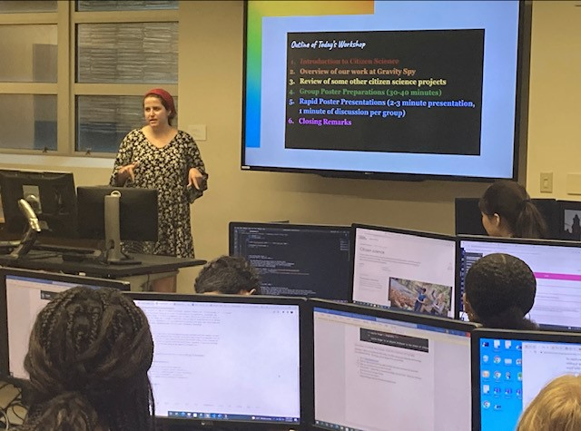
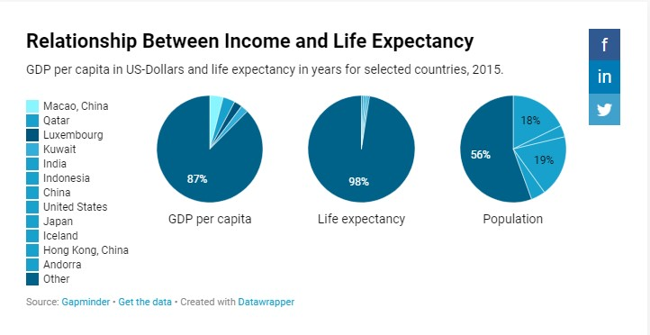

LaNaia Jones is the chief information officer of the CIA as of this year. She was recently appointed to this position from her former position of being a Potomac Officers Club speaker. She is a veteran leader in the Information Community. She has a master’s degree in technology management and a bachelor’s degree in mathematics and computer science from the University of Maryland. Jones' contributions are not only important to the STEM community, but also to the many underrepresented women of color in the field.
My Teachable Machine
Zaria Lewis / July 19, 2022
During today's class, we learned about teachable machines and created our own with a partner. I worked with Maddie and created a teachable machine that would recognize our faces and when nobody was there. Our idea behind it was that it could be used for opening doors on campus when the machine recognized a student standing in front of it.
During today's class, we went on a scavenger hunt to see how the employees of Syracuse University use technology and data. We were split into groups and I worked with Maddie and Christian. One of the departments we interviewed was Career Services. Here we learned that in order to help the students of Syracuse University find jobs and internships, they use data to see what areas tend to hire SU students the most. They also used technology to schedule meetings for students, and this was especially used during the pandemic.
Citizen Science & AWS
Zaria Lewis / July 21, 2022
AWS is described as being "...the world's most comprehensive and broadly adopted cloub platform..." This offers many services from data centers around the world. Most people use the cloud at least once a day without even realizing it. AWS can be used for social networking, tv streaming services, mobile apps, and many other websites.

Photoshop Tutorial
Zaria Lewis / July 21, 2022
The video below is a beginner's tutorial on how to use Photoshop. This video is very helpful without being too long. I hope you enjoy!
Women in Gaming & Cyber Security
Zaria Lewis / July 22, 2022
Today in class we had a speaker come in and discuss cyber security with us. Cyber security is the practice of protecting networks, devices, personal information, etc. There are many threats to be aware of. One of the main ones is phishing which seeks you personal information by having you click on faulty links or emails. I think in the future there will continue to be an increase in the need for people in cyber security due to the continuing expansion of technology in society. There will continue to be threats that we don't anticipate but as we learn more and more, I think it will be possible to secure people's personal information.
Googlefu & Bust or Bias
Zaria Lewis / July 25, 2022
To learn more about bias, the class did an activity together. In this activity we were given a topic to defend or debunk and we took the information we learned about researching to build our cases. One of the topics was proving to a five year old that the Earth is round. Knowing that our audience is five years old, we used more visuals than words to appeal to them. In the another situation, the audience was a college student. Because of this we had to get our information from more reputable sources, having less visuals. This activity was very effective in getting us to use the skills we learned and it was very entertaining.
Storytelling with Data
Zaria Lewis / July 26, 2022
The story behind this chart is that there is a relationship between the amount of money a person makes and their life expectancy. This chart shows the relationship between the GDP, life expectancy, and populationship within different countries. The use of the bright colors grabs your attention and the pie charts make it easier to interpret the data.

AI & Robotics
Zaria Lewis / July 28, 2022
A bias in AI that we learned about today is the judgment based on prejudices rather than an impartial evaluation of the facts. To try and combat this, we can try and make sure that we are only looking at the facts instead of being influenced by our personal experiences.